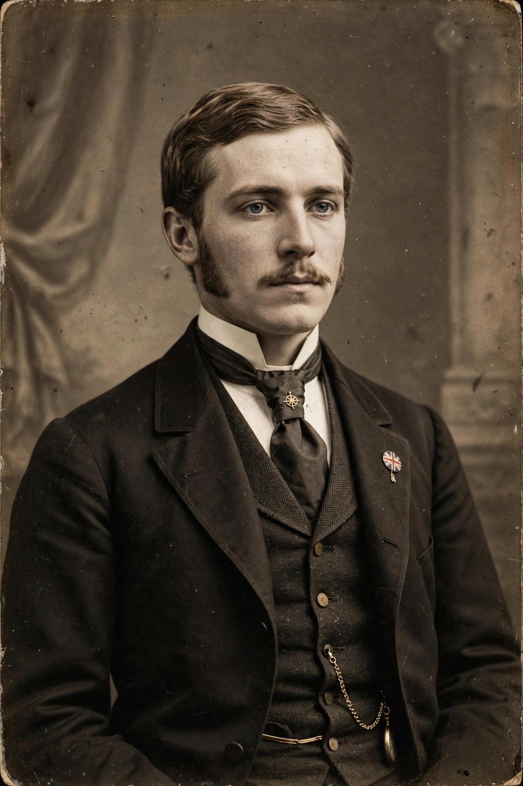

| Cecil John Rhodes | |
|---|---|
 | |
| Born | 5 July 1853, Bishop's Stortford, England |
| Died | 26 March 1902 (aged 48), Muizenberg, Cape Colony |
| Occupation | Businessman; politician |
| Office | Prime Minister of the Cape Colony (1890–1896) |
| Known for | De Beers; British South Africa Company; Rhodesia |
Cecil John Rhodes (5 July 1853 – 26 March 1902) was an English-South African mining magnate and politician in southern Africa who served as Prime Minister of the Cape Colony from 1890 to 1896. He and his company, the British South Africa Company, founded the southern African territory of Rhodesia (now Zimbabwe and Zambia), which the company named after him in 1895. He also devoted much effort to realising his vision of a Cape to Cairo Railway through British territory.
Rhodes was sent to Natal in 1870 for his health and soon joined the diamond rush at Kimberley. With backing from the Rothschild bank, he amalgamated the Kimberley mines into De Beers Consolidated Mines (1888), which came to control some 90 per cent of the world's diamond production. He also co-founded the gold-mining company Gold Fields of South Africa and studied at Oriel College, Oxford, attending intermittently over a decade.
Elected to the Cape Parliament in 1881, Rhodes became prime minister in 1890. His government passed measures restricting African voting rights and land ownership, including the Glen Grey Act. In 1889 his British South Africa Company received a royal charter, and its pioneer column occupied Mashonaland in 1890; company rule extended over what became Southern and Northern Rhodesia. The disastrous Jameson Raid of 1895–96, an unauthorised attempt to overthrow the South African Republic, forced his resignation as prime minister. He supported the British cause in the Second Boer War and died at Muizenberg in 1902, aged 48.
Rhodes's will established the Rhodes Scholarships at Oxford. He was buried at World's View in the Matobo Hills. His statues and commemoration have become intensely controversial: the "Rhodes Must Fall" movement, begun at the University of Cape Town in 2015, spread to Oxford and elsewhere, citing his role in colonialism and the dispossession and disenfranchisement of southern Africa's peoples.